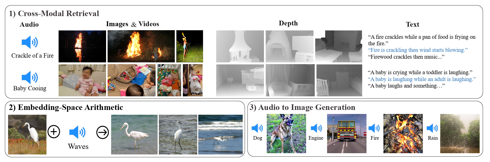
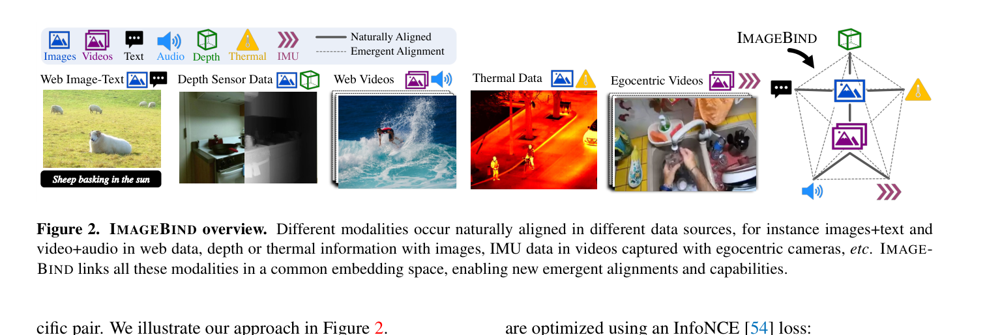
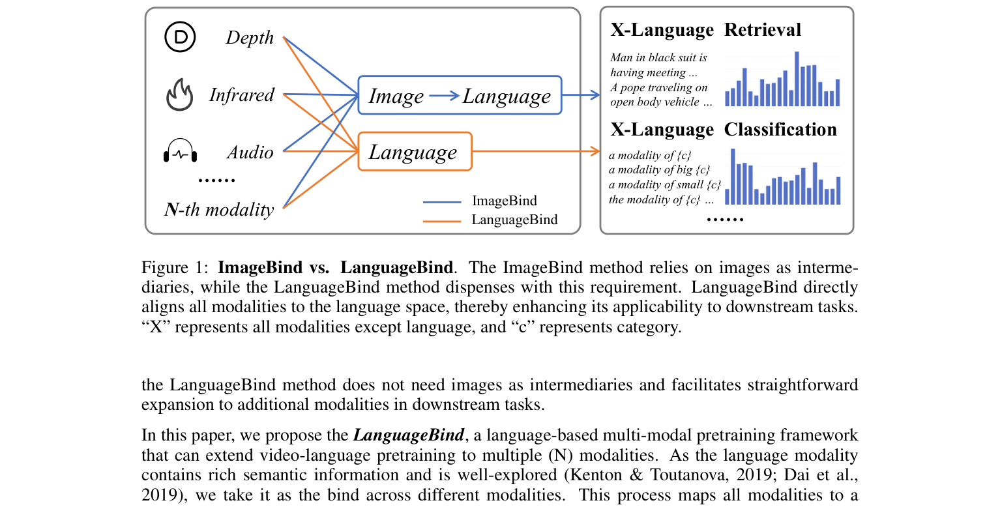
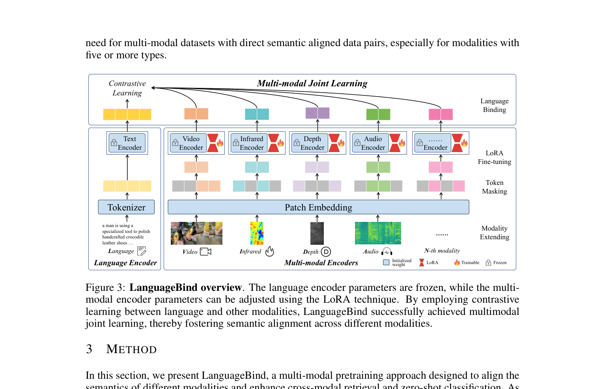

ImageBind 与 LanguageBind 对比¶
📄 涉及论文链接： - ImageBind: One Embedding Space To Bind Them All | PDF - LanguageBind: Extending Video-Language Pretraining to N-modality by Language-based Semantic Alignment | PDF
核心要点¶
- ImageBind 和 LanguageBind 都是多模态对比学习框架，目标是把多种模态映射到同一个语义嵌入空间。
- ImageBind 以图像为中心：所有非图像模态（音频、深度、热成像、IMU 等）通过与图像配对的数据进行对齐，文本则通过大规模的 (image, text) 数据间接与其他模态产生 emergent alignment。
- LanguageBind 以语言为中心：直接把所有模态对齐到语言空间，冻结预训练好的语言编码器，用 LoRA 微调其他模态编码器，避免了 ImageBind 中图像作为中介带来的间接对齐损失。
- 关键差异：ImageBind 的文本能力受限于图像编码器，其他模态到文本的对齐是“间接”的；LanguageBind 直接以语义最丰富的语言为锚点，更适合下游需要语言交互的任务。
- LanguageBind 还提出了五模态数据集 VIDAL-10M（Video、Infrared、Depth、Audio、Language），并验证了多模态直接对齐的有效性。
1. ImageBind¶
1.1 动机¶
学习一个真正的联合嵌入空间需要大量所有模态同时出现的配对数据，这在实践中几乎不可行。ImageBind 的核心洞察是：图像本身具有很强的“绑定”属性——一张海滩照片可以同时唤起海浪声、沙的触感、微风等感官体验。
因此，ImageBind 提出：与其收集所有模态两两配对的标注数据，不如利用自然界中大量存在的“图像-某模态”配对数据（如视频-音频、图像-深度、图像-热成像、视频-IMU），把每种模态都对齐到图像嵌入空间。这样，即使某些模态之间没有直接配对数据，它们也能在共享空间中产生 emergent alignment（涌现对齐）。
1.2 核心做法¶

Figure 1: ImageBind 的联合嵌入空间支持跨模态检索、嵌入空间算术和音频到图像生成等涌现能力。
六种模态
ImageBind 涵盖六种模态： - Image / Video：用 ViT 编码，视频被当作 2 帧的图像片段处理。 - Text：沿用 CLIP 的文本编码器。 - Audio：2 秒音频采样为 16kHz，转换为 128-bin mel-spectrogram，再用 ViT 编码。 - Depth：单通道深度图，转换为 disparity map 后用 ViT 编码。 - Thermal：单通道热成像图，用 ViT 编码。 - IMU：5 秒内的加速度计和陀螺仪 X/Y/Z 轴读数，共约 2K 时间步，经 1D 卷积投影后用 Transformer 编码。
以图像为锚点的对比学习
对于每一对 (image, modality) 数据，分别用各自的编码器提取归一化嵌入，然后在 batch 内使用 InfoNCE loss 进行对称对比学习：
其中正样本是配对的 image 与 modality 样本，负样本是 batch 内其他不相关的样本。所有模态的编码器输出都投影到同一个 \(d\) 维空间。
利用预训练视觉-语言模型初始化
ImageBind 可以直接用 OpenCLIP 的 image 和 text 编码器进行初始化，并在训练时保持 frozen，只更新 audio、depth、thermal、IMU 编码器。这样既利用了 web-scale image-text 预训练的强大语义，又只需要少量的 modality-paired 数据完成绑定。
与 CLIP 的关系
可以通俗地把 ImageBind 理解为 CLIP 的多模态扩展版：CLIP 只把 image 和 text 对齐到一个联合空间，ImageBind 则把 image 作为中心枢纽，把 audio、depth、thermal、IMU、video 等更多模态也拉进同一个空间。区别在于，ImageBind 中的新模态都是先对齐到图像，再通过图像间接与文本对齐；而 LanguageBind 进一步把中心枢纽从图像换成语言，让每个模态直接对齐语义最丰富的语言。
1.3 关键细节¶

Figure 2: ImageBind 概览：不同模态在不同数据源中自然配对出现，ImageBind 将它们统一到同一个嵌入空间。数据配对的自然性
- (image, text)：来自大规模 web 数据。
- (video, audio)：来自 Audioset 等视频数据集。
- (image, depth)：来自 SUN RGB-D。
- (image, thermal)：来自 LLVIP。
- (video, IMU)：来自 Ego4D 等第一人称视频。
这些数据不需要额外的人工语义标注，属于“自监督”或自然配对。
Emergent zero-shot 能力
由于所有模态都与图像对齐，而图像又与文本对齐，因此模型可以在没有直接 (audio, text) 配对数据的情况下，完成 audio 的 zero-shot text-prompt 分类。ImageBind 把这种能力称为 emergent zero-shot，以区别于用显式文本监督训练的 zero-shot 方法。
模态特定的投影头
每个模态编码器后接一个 modality-specific 的线性投影头，将输出映射到固定维度的归一化嵌入，再参与对比学习。这种设计既便于学习，也方便用预训练模型初始化部分编码器。
2. LanguageBind¶
2.1 动机¶
Video-Language（VL）预训练在视频理解任务上取得了很大进展，但现有框架很难扩展到两种以上的模态。ImageBind 虽然能把多种模态绑定到一个空间，但它是以图像为中介的：
- 文本先对齐到图像；
- 音频、深度、热成像等也对齐到图像；
- 文本和其他模态之间的对齐是间接的。
对于大量下游任务（如 zero-shot retrieval、classification）来说，最终往往需要与语言交互。ImageBind 的间接对齐路径会导致语言相关任务的性能损失。
LanguageBind 的核心洞察是：语言模态语义最丰富、研究最充分，应该直接作为所有模态的对齐中心。这样每个新模态只需要与语言配对数据，就能直接加入统一空间，无需图像作为中介。
2.2 核心做法¶

Figure 3: ImageBind 与 LanguageBind 的核心区别：ImageBind 通过图像间接对齐，LanguageBind 直接对齐到语言空间。语言为中心的直接对齐
LanguageBind 把预训练好的语言编码器冻结，然后为视频、红外、深度、音频等模态分别训练编码器。训练目标是把每种模态的嵌入直接与对应文本嵌入拉近，使用对比学习：
其中 \(x_i\) 是第 \(i\) 个模态样本的特征，\(y_j\) 是第 \(j\) 个文本样本的特征，两者都经过归一化。
与 CLIP 的关系
LanguageBind 同样可以理解为 CLIP 的多模态扩展版：CLIP 把 image 和 text 对齐到一个空间，LanguageBind 则把预训练好的 text 编码器冻结作为语义锚点，让 video、audio、depth、infrared 等其他模态直接对齐到语言。换句话说，ImageBind 把 CLIP 的“图像端”扩展出去，LanguageBind 把 CLIP 的“文本端”扩展出去，两者的本质都是对比学习框架下的多模态联合嵌入。
多模态编码器与 LoRA 微调
- 非语言模态的编码器采用 24 层、1024 维、patch size 为 14 的 ViT，从 OpenCLIP-large 初始化。
- 深度图和红外图被当作 RGB 图像处理，在通道维度复制 3 次。
- 音频被转换为 10 秒、128 mel-bins 的 spectrogram，同样复制 3 个通道。
- 为了高效训练，LanguageBind 使用 LoRA 对编码器进行低秩适配，冻结原始权重 \(W_0\)，只学习低秩增量 \(BA\)：
Patch Masking
受 MAE 启发，LanguageBind 在编码器输入端进行 patch masking，只把可见 patch 送入编码器，提高训练效率。
2.3 关键细节¶

Figure 4: LanguageBind 整体框架：冻结语言编码器，其他模态编码器通过 LoRA 微调和对比学习与语言对齐。语言编码器
语言编码器使用 12 层、768 维的 Transformer，从 OpenCLIP 初始化。BPE tokenizer 将文本切分为子词，经过词嵌入层和 Transformer 后得到文本特征。
VIDAL-10M 数据集
为了验证语言中心对齐的有效性，LanguageBind 构建了 VIDAL-10M 五模态数据集： - 300 万 video-language 对 - 300 万 infrared-language 对 - 300 万 depth-language 对 - 100 万 audio-language 对
数据来源和构造要点： - 视频全部来自短视频平台，保证完整语义，而不是从长视频中截断的片段。 - 通过搜索词数据库从 YouTube Shorts、Freesound 等平台收集 video-text 和 audio-text 对。 - 对标题和标签进行过滤，要求标题至少 2 个词、带视频标签，并移除无关词；视频时长限制在 20 秒以内。 - 利用生成模型从视频关键帧生成深度图（GLPN）和红外图（sRGB-TIR）。 - 对文本进行多视角生成与增强：包括标题、标签、关键帧 caption（OFA）、视频 caption（mPLUG-owl）以及 ChatGPT 精炼后的增强描述。
模态扩展
新增模态的流程被标准化为四步：token 化、OpenCLIP 初始化、token masking + LoRA 微调、与语言空间对齐。因此 LanguageBind 可以较容易地扩展到 \(N\) 种模态。
3. 总结与对比¶
| 维度 | ImageBind | LanguageBind |
|---|---|---|
| 发表 | NeurIPS 2023（arXiv 2023.05） | ICLR 2024（arXiv 2023.10） |
| 核心思想 | 以图像为中介绑定多模态 | 以语言为中心直接绑定多模态 |
| 对齐路径 | modality → image ← text（间接） | modality → language（直接） |
| 覆盖模态 | image/video、text、audio、depth、thermal、IMU（6 种） | video、infrared、depth、audio、language（5 种） |
| 文本编码器 | 与图像编码器一起从 OpenCLIP 初始化，训练时 frozen | 从 OpenCLIP 初始化并冻结，作为对齐锚点 |
| 其他编码器 | 各自独立训练，部分 frozen | 统一 ViT-L/14 结构，使用 LoRA 微调 |
| 训练数据 | 利用 web-scale image-text 和自然配对的 modality-image 数据 | 构建 VIDAL-10M，所有模态都与文本描述对齐 |
| 效率优化 | 无特殊参数高效设计 | Patch masking + LoRA |
| 优势场景 | 跨模态检索、嵌入算术、组合式生成 | 需要语言交互的下游任务（检索、分类）、模态扩展 |
关键差异一句话总结：
- ImageBind 问的是：“如果所有模态都能与图像对齐，它们之间能否自动也对齐？”
- LanguageBind 问的是：“既然最终都要跟语言交互，为什么不直接让所有模态对齐到语言？”
因此，LanguageBind 可以看作是对 ImageBind 的“去中介化”：把图像这个间接桥梁替换为语言这个直接锚点，从而在语言相关任务上获得更清晰、更强的语义对齐。